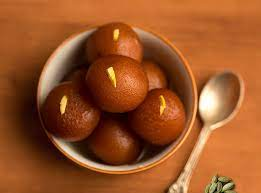

Gulab Jamun
Ingredients:
- 200 grams of khoya (milk solids)
- 2 tablespoons all-purpose flour (maida)
- A pinch of baking soda
- 2 tablespoons milk
- Ghee or oil for deep frying
- For the sugar syrup:
- 1 cup sugar
- 1 cup water
- A few drops of rose essence
- A pinch of cardamom powder
Instructions:
1. In a mixing bowl, crumble the khoya and add all-purpose flour and baking soda.
2. Mix well and add milk to form a soft and smooth dough.
3. Divide the dough into small, equal-sized portions and shape them into smooth balls.
4. Heat ghee or oil in a deep frying pan and deep fry the khoya balls until they turn golden brown.
5. In a separate pan, prepare the sugar syrup by boiling sugar, water, rose essence, and cardamom powder until it reaches a one-thread consistency.
6. Remove the fried khoya balls from the oil and immediately immerse them in the hot sugar syrup.
7. Allow the Gulab Jamuns to soak in the syrup for a few hours to absorb the flavors.
8. Serve your Gulab Jamun warm, with a drizzle of syrup and garnished with pistachios or saffron strands.
Indulge in the sweet and syrupy goodness of homemade Gulab Jamun!